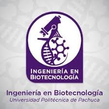

Ingeniería en Biotecnología

Titular: M. B. Alejandrina Gómez Valadez
Correo institucional: biotecnologia@upp.edu.mx
Teléfono de Atención: 01 (771) 547 7510 ext: 2479
Horario de Atención: 09:00 a 17:00 hrs.
Introducción
Proporciona los conocimientos necesarios sobre la utilización de organismos vivos o partes de ellos para diseñar, desarrollar o innovar procesos o productos industriales, alimentarios, farmacológicos o relacionados con la protección y conservación del medio ambiente.
Principales áreas de conocimiento
- Agrobiotecnología
- Área de la salud
- Medio ambiente
- Industrial (alimentos, farmacéutica y materiales)
- Nanotecnología
líneas de investigación
- CA Biotecnología Ambiental:
-
- Monitoreo y seguimiento de la contaminación para la determinación de la calidad de agua y suelo.
- Desarrollo e innovación de productos biotecnológicos acoplados a procesos ambientales.
- Tratamiento biológico de aguas residuales, municipales e Industriales y remediación de suelos contaminados con hidrocarburos.
- Diseño y modelamiento matemático de bioprocesos para la remediación, eliminación y disposición de contaminantes en agua y suelo.
- Aislamiento e identificación de microorganismos degradadores de contaminantes y/o con capacidad de mejorar la asimilación de nutrientes en cultivos.
- CA Aprovechamiento integral de Recursos Bióticos:
-
- Aislamiento, Caracterización y Aplicación de Organismos de Interés Biotecnológico.
- Análisis Moleculares y Bioinformático de Organismos de Interés Biotecnológico.
- Diseño y Desarrollo de Procesos Biotecnológicos para la Obtención de Productos con Alto Valor Agregado.
objetivo
Formar profesionistas líderes altamente competentes en la aplicación y gestión de procesos biotecnológicos que incluyan la propagación y escalamiento de organismos de interés industrial, así como el dominio de las técnicas analíticas para el control, evaluación y seguimiento de los procesos con una sólida formación en ingeniería y las ciencias de la vida, para apoyar la toma de decisiones en materia de aplicación, control y diseño de procesos biotecnológicos industriales; además de ser profesionistas responsables con su ambiente y entorno productivo y social.
Perfil de egreso:
El egresado de la carrera en Biotecnología será un profesional de vanguardia, con una formación integral en ciencias básicas, ingeniería y gestión de la producción. Podrá diseñar y desarrollar proyectos en procesos de fermentación, tratamiento de aguas y suelos, de residuos agropecuarios, así como de sistemas integrales de producción biotecnológica, y para la conservación y propagación de microorganismos de interés industrial, o manipulados genéticamente. Por ello, está preparado en el campo de las técnicas analíticas de vanguardia y tendrá interés y capacidad en actualizarse y laborar con responsabilidad social, respeto al ambiente y un amplio sentido ético.
Competencias y habilidades
- Utilizar Técnicas de análisis para determinar las características de los productos biotecnológicos mediante parámetros físicos, químicos y sensoriales.
- Diseñar la ingeniería básica de procesos biotecnológicos para obtener productos de interés industrial a través de técnicas adecuadas de ingeniería.
- Asesorar a los sectores productivos para el mejoramiento de su planta productiva mediante la reingeniería de procesos y productos biotecnológicos.
- Diseñar nuevas tecnologías para la mejora de procesos y productos mediante la investigación aplicada y el desarrollo tecnológico.
oportunidades de trabajo
- Sector productivo para el diseño, desarrollo e innovación de bioprocesos.
- Aprovechamiento de recursos naturales.
- Áreas industriales: salud, protección ambiental, farmaceútica, agropecuaria y alimentaría.